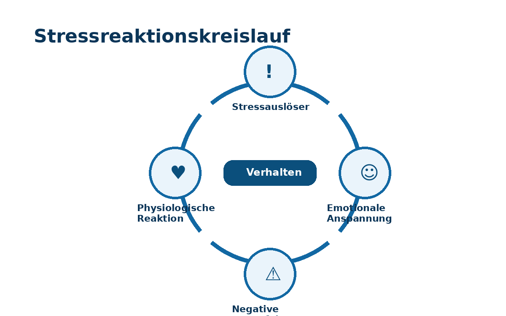
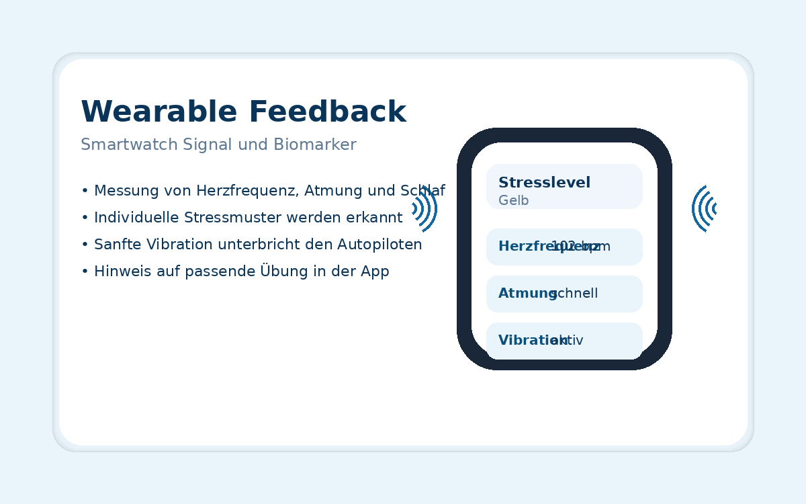
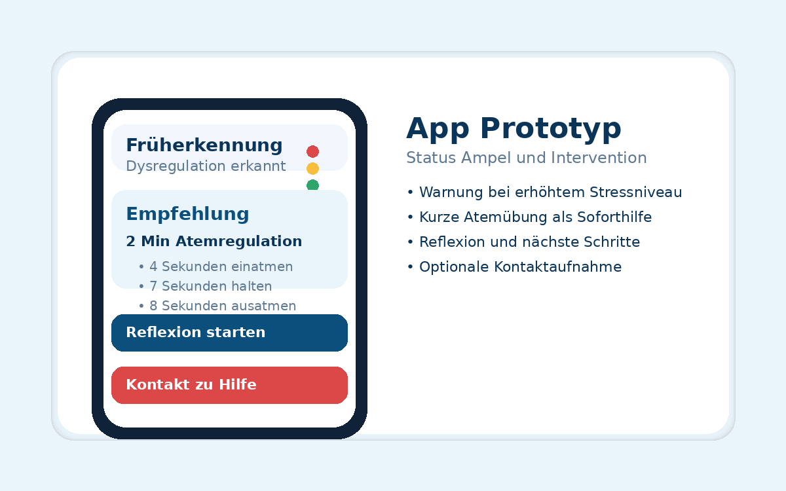
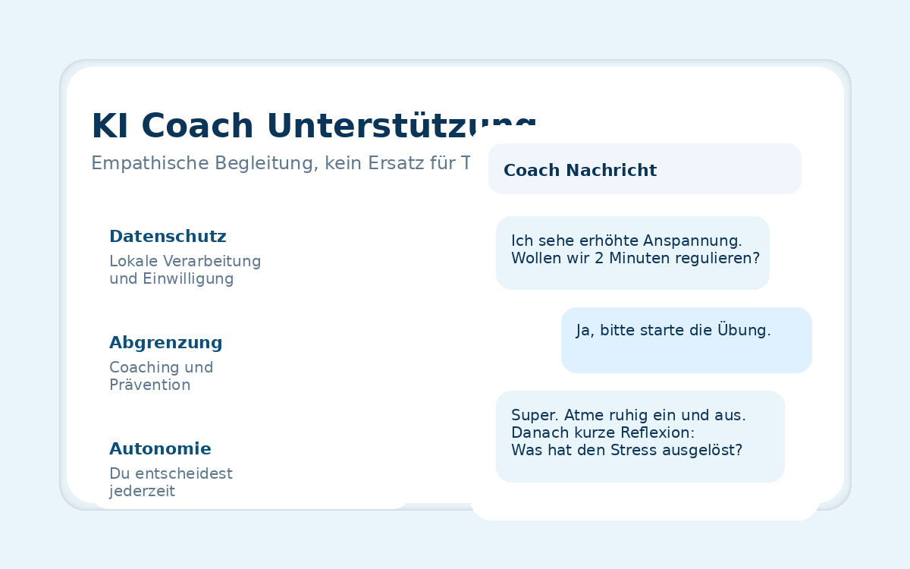

Ziel
Ziel des Frühwarnsystems ist es, kritische Stresszustände frühzeitig zu identifizieren und gezielt zu intervenieren,
bevor sie sich negativ auf Gesundheit, Wohlbefinden und Verhalten auswirken.
Der Fokus liegt auf Prävention, Selbstregulation und der frühzeitigen Unterbrechung automatischer Stressreaktionen.
Stresslevel erkennen
Frühzeitig gegensteuern
Gefährliche Stressentgleisungen verhindern
Kernidee: Wenn Dysregulation erkannt wird, erhält die Person eine individuell passende Übung je nach Stufe.
Das System unterstützt damit aktiv, bevor kompensatorische Verhaltensreaktionen entstehen.
Was das System konkret macht
- Kontinuierliche Messung physiologischer Stresssignale
- Erkennung individueller Muster statt starrer Grenzwerte
- Frühe Warnung durch Signal und App Benachrichtigung
- Empfehlung kurzer Übungen für sofortige Selbstregulation
- Unterbrechung des Teufelskreises bei ungesunden Bewältigungsstrategien
Das Stressreaktionsmuster
Das System setzt vor automatischen Kompensationsreaktionen an und hilft, den Kreislauf zu unterbrechen.

Beispiel für negative Stressfolgen: exzessive Social Media Nutzung, Fast Food, Alkohol oder andere kurzfristige Kompensation.
Intervention im richtigen Moment
Sobald Dysregulation erkannt wird, schlägt die KI eine präventive Übung vor. Ziel ist nicht Kontrolle,
sondern Unterstützung durch kurze, realistische Schritte.
- Haptisches Signal am Handgelenk als Unterbrechung
- Atemregulation als schnelle Stabilisierung
- Reflexion zur Ursachenklärung und Entscheidungsfreiheit
- Optional Weiterleitung zu Unterstützung, falls erforderlich
Biomarker und Sensorik
Der KI Coach misst kontinuierlich Biomarker. Diese Daten bilden die Grundlage für die Erkennung individueller Stressmuster.
- Herzfrequenz als Indikator für Aktivierung und Belastung
- Atmung als schneller Marker für Anspannung und Regulation
- Schlafverhalten als Basis für Erholung und Stabilität
Wichtig: Ziel ist keine Diagnose. Es geht um Mustererkennung und präventive Unterstützung zur Selbsthilfe.
Wearable Feedback
Wearables sind mit Sensoren ausgestattet, die am Handgelenk vibrieren und direkt mit dem KI Coach gekoppelt sind.
Dadurch entsteht ein körpernahes Frühwarnsignal im Alltag.

Prototyp · Präventive Unterstützung
Die folgenden Visuals sind Prototyp Darstellungen und dienen der anschaulichen Erklärung des Konzepts.
Smartwatch Feedback
Haptisches Signal und schnelle Sichtbarkeit kritischer Zustände.
App Benachrichtigungen

Atemübung, Reflexion, klare nächste Schritte statt Überforderung.
KI Coach Unterstützung

Empathische Begleitung, transparent, nicht therapeutisch.
Konkrete eingesetzte KI Ansätze
Maschinelles Lernen
Die KI lernt aus Daten, wie sich Stress bei einer Person typischerweise entwickelt und welche Muster kritisch sind.
- Personalisierte Schwellenwerte statt Standardwerte
- Anpassung an Alltag und individuelle Unterschiede
- Kontinuierliche Verbesserung durch Feedback
Zeitreihenanalyse
Veränderungen über Zeit werden ausgewertet, zum Beispiel steigende Herzfrequenz oder unruhiger Schlaf.
- Erkennung von Trends und Abweichungen
- Berücksichtigung von Tageszeit und Kontext
- Frühwarnung vor Eskalation
Mustererkennung
Wiederkehrende Stressverläufe und Abweichungen vom persönlichen Normalzustand werden identifiziert.
- Stabiler Alltag versus kritische Phasen
- Erkennung von Überforderung und Dauerstress
- Hinweise auf passende Übungen je Stufe
Anomalieerkennung
Ungewöhnliche Stressentwicklungen werden früh erkannt, bevor sie eskalieren.
- Abweichungen von typischen Tagesmustern
- Kombination mehrerer Biomarker
- Gezielte Warnung mit klarer Handlungsempfehlung
Herausforderungen · Technik und Ethik
Technische Herausforderungen
- Qualität und Genauigkeit von Sensordaten
- Individuelle Unterschiede in Stressreaktionen
- Kontextabhängige Interpretation physiologischer Signale
- Zuverlässige Echtzeit Analyse im Alltag
- Fehlalarme bei kurzfristigen Stressreaktionen
Ethische Aspekte
- Datenschutz und volle Datensouveränität der Nutzer
- Keine Diagnose, kein Ersatz für Therapie
- Unterstützung der Selbstregulation, keine Fremdsteuerung
- Transparente und verständliche KI Empfehlungen
- Risiko emotionaler Abhängigkeit von KI Systemen reduzieren
Abgrenzung: Emotional KI ist ein Präventions und Coaching Konzept. Es stellt keine medizinische Diagnose,
ersetzt keine Psychotherapie und dient der Selbsthilfe und Stabilisierung.
QR Code zum Prototyp
Scanne den QR Code oder klicke darauf, um den Prototyp zu öffnen.
Transparenz und Datenschutz
Datenprinzipien
- Datensparsamkeit: nur notwendige Signale
- Einwilligung: Nutzer entscheiden über Nutzung
- Verständlichkeit: klare Erklärungen der Empfehlungen
Sicherheitsprinzipien
- Schutz sensibler Gesundheitsdaten
- Keine verdeckte Profilbildung
- Keine automatischen Diagnosen
Hinweis: Diese Webseite zeigt einen Konzeptprototyp. Inhalte und Visuals dienen der Darstellung eines möglichen Systems.
Kontakt
Fragen oder Feedback zum Projekt sind willkommen. Die E Mail Adresse kannst du jederzeit in der index html anpassen.
E Mail senden
Optional: füge hier später LinkedIn oder Projektunterlagen hinzu